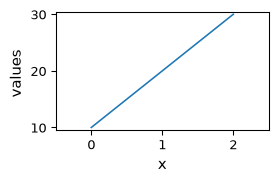
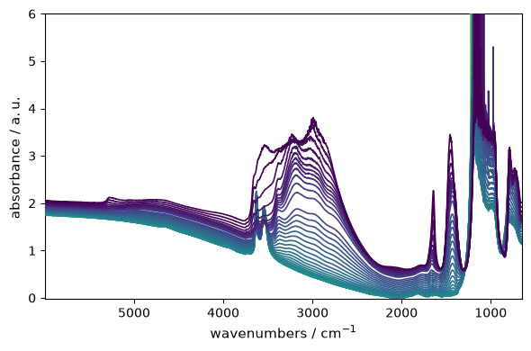
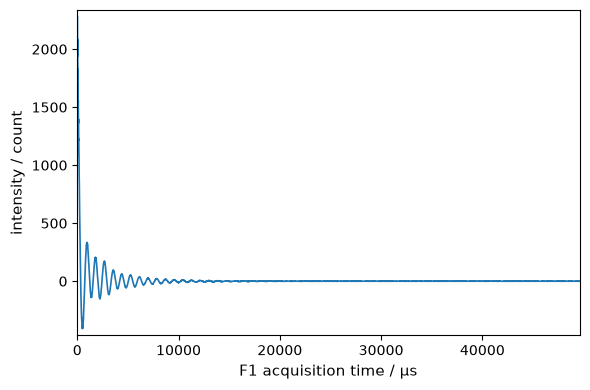

The NDDataset object
The NDDataset is the main object used by SpectroChemPy.
Like numpy ndarrays, NDDatasets have the capability to be sliced, sorted and subjected to mathematical operations.
But, in addition, NDDatasets may have units, can be masked and each dimension can have coordinates also with units. This makes NDDatasets aware of units compatibility, e.g., for binary operations such as addition or subtraction or during the application of mathematical operations. In addition to or in replacement of numerical data for coordinates, NDDatasets can also have labeled coordinates where labels can be different kinds of objects (strings, datetime objects, numpy ndarrays or other NDDatasets, etc.).
This offers a lot of flexibility in using NDDatasets that, we hope, will be useful for applications. See the :ref:examples-gallery for additional information about such possible applications.
Table of Contents
Introduction
Below (and in the next sections), we try to give an almost complete view of the NDDataset features.
As we will make some reference to the numpy library, we also import it here.
[1]:
import numpy as np
import spectrochempy as scp
We additionally import the three main SpectroChemPy objects that we will use through this tutorial
[2]:
from spectrochempy import Coord
from spectrochempy import CoordSet
from spectrochempy import NDDataset
For a convenient usage of units, we will also directly import ur, the unit registry which contains all available units.
[3]:
from spectrochempy import ur
Multidimensional arrays are defined in Spectrochempy using the NDDataset object.
NDDataset objects mostly behave like numpy’s numpy.ndarray (see for instance numpy quickstart tutorial).
However, unlike raw numpy arrays, the presence of optional properties makes them (hopefully) more appropriate for handling spectroscopic information, which is one of the major objectives of the SpectroChemPy package:
mask: Data can be partially masked at willunits: Data can have units, allowing units-aware operationsCoordSet: Data can have a set of coordinates, one or several per dimension
Additional metadata can also be added to the instances of this class through the meta properties.
1D-Dataset (unidimensional dataset)
In the following example, a minimal 1D dataset is created from a simple list, to which we can add some metadata:
[4]:
d1D = NDDataset(
[10.0, 20.0, 30.0],
name="Dataset N1",
author="Blake and Mortimer",
description="A dataset from scratch",
history="creation",
)
d1D
[4]:
NDDataset [Dataset N1] — float64, size: 3
Data
[5]:
print(d1D)
NDDataset: [float64] unitless (size: 3)
[6]:
_ = d1D.plot(figsize=(3, 2))

Except few additional metadata such author , created …, there is not much difference with respect to a conventional numpy.array. For example, one can apply numpy ufunc‘s directly to a NDDataset or make basic arithmetic operation with these objects:
[7]:
np.sqrt(d1D)
[7]:
NDDataset [Dataset N1] — float64, size: 3
2026-06-26 18:27:52+00:00> Ufunc sqrt applied.
Data
[8]:
d1D += d1D / 2.0
d1D
[8]:
NDDataset [Dataset N1] — float64, size: 3
2026-06-26 18:27:52+00:00> Inplace binary op: iadd with `Dataset N1`
Data
As seen above, there are some attributes that are automatically added to the dataset:
id: This is a unique identifier for the object.name: A short and unique name for the dataset. It will be equal to the automaticidif it is not provided.author: Author determined from the computer name if not provided.created: Date and time of creation.modified: Date and time of modification.
These attributes can be modified by the user, but the id, created and modified attributes are read only.
Some other attributes are defined to describe the data: * title: A long name that will be used in plots or in some other operations. * history: History of operations performed on the object since its creation. * description: A comment or a description of the object’s purpose or contents. * origin: An optional reference to the source of the data.
Here is an example of the use of the NDDataset attributes:
[9]:
d1D.title = "intensity"
d1D.name = "mydataset"
d1D.history = "created from scratch"
d1D.description = "Some experimental measurements"
d1D
[9]:
NDDataset [mydataset] — float64, size: 3
2026-06-26 18:27:52+00:00> Inplace binary op: iadd with `Dataset N1`
2026-06-26 18:27:52+00:00> Created from scratch
Data
d1D is a 1D (1-dimensional) dataset with only one dimension.
Some attributes are useful to check this kind of information:
[10]:
d1D.shape # the shape of 1D contain only one dimension size
[10]:
(3,)
[11]:
d1D.ndim # the number of dimensions
[11]:
1
[12]:
d1D.dims # the name of the dimension (it has been automatically attributed)
[12]:
['x']
Note: The names of the dimensions are set automatically. But they can be changed, with the limitation that the name must be a single letter.
[13]:
d1D.dims = ["q"] # change the list of dim names.
[14]:
d1D.dims
[14]:
['q']
nD-Dataset (multidimensional dataset)
To create a nD NDDataset, we can provide a nD-array like object to the NDDataset instance constructor
[15]:
a = np.random.rand(2, 4, 6)
a
[15]:
array([[[ 0.5227, 0.7465, ..., 0.7523, 0.4629],
[ 0.1262, 0.9736, ..., 0.6226, 0.359],
[ 0.3008, 0.7079, ..., 0.9543, 0.6169],
[ 0.8801, 0.7392, ..., 0.03807, 0.3741]],
[[ 0.4888, 0.009181, ..., 0.656, 0.2796],
[ 0.549, 0.7487, ..., 0.3168, 0.01787],
[ 0.6013, 0.4572, ..., 0.1969, 0.4728],
[ 0.01391, 0.8987, ..., 0.1201, 0.3853]]])
[16]:
d3D = NDDataset(a)
d3D.title = "energy"
d3D.author = "Someone"
d3D.name = "3D dataset creation"
d3D.history = "created from scratch"
d3D.description = "Some example"
d3D.dims = ["u", "v", "t"]
d3D
[16]:
NDDataset [3D dataset creation] — float64, shape: (u:2, v:4, t:6)
Data
[ 0.1262 0.9736 ... 0.6226 0.359]
[ 0.3008 0.7079 ... 0.9543 0.6169]
[ 0.8801 0.7392 ... 0.03807 0.3741]]
[[ 0.4888 0.009181 ... 0.656 0.2796]
[ 0.549 0.7487 ... 0.3168 0.01787]
[ 0.6013 0.4572 ... 0.1969 0.4728]
[ 0.01391 0.8987 ... 0.1201 0.3853]]]
We can also add all information in a single statement
[17]:
d3D = NDDataset(
a,
dims=["u", "v", "t"],
title="Energy",
author="Someone",
name="3D_dataset",
history="created from scratch",
description="a single statement creation example",
)
d3D
[17]:
NDDataset [3D_dataset] — float64, shape: (u:2, v:4, t:6)
Data
[ 0.1262 0.9736 ... 0.6226 0.359]
[ 0.3008 0.7079 ... 0.9543 0.6169]
[ 0.8801 0.7392 ... 0.03807 0.3741]]
[[ 0.4888 0.009181 ... 0.656 0.2796]
[ 0.549 0.7487 ... 0.3168 0.01787]
[ 0.6013 0.4572 ... 0.1969 0.4728]
[ 0.01391 0.8987 ... 0.1201 0.3853]]]
Three names are attributed at creation (if they are not provided with the dims attribute, then the names ‘z’,’y’,’x’ are automatically attributed)
[18]:
d3D.dims
[18]:
['u', 'v', 't']
[19]:
d3D.ndim
[19]:
3
[20]:
d3D.shape
[20]:
(2, 4, 6)
About dates and times
The dates and times are stored internally as UTC (Coordinated Universal Time). Timezone information is stored in the timezone attribute. If not set, the default is to use the local timezone, which is probably the most common case.
[21]:
nd = NDDataset()
nd.created
[21]:
'2026-06-26 18:27:52+00:00'
In this case our local timezone has been used by default for the conversion from UTC datetime.
[22]:
nd.local_timezone
[22]:
'Etc/UTC'
[23]:
nd.timezone = "EST"
nd.created
[23]:
'2026-06-26 13:27:52-05:00'
For a list of timezone code (TZ) you can have a look at List_of_tz_database_time_zones.
About the history attribute
The history is saved internally as a list, but it has a different behavior than the usual list. The first time a NDDataset is created, the list is empty.
[24]:
nd = NDDataset()
nd.history
[24]:
[]
Assigning a string to the history attribute has two effects. First, the string is appended automatically to the previous history list, and second, it is preceded by the time it was added.
[25]:
nd.history = "some history"
nd.history = "another history to append"
nd.history = "..."
nd.history
[25]:
['2026-06-26 18:27:52+00:00> Some history',
'2026-06-26 18:27:52+00:00> Another history to append',
'2026-06-26 18:27:52+00:00> ...']
If you want to erase the history, assign an empty list
[26]:
nd.history = []
nd.history
[26]:
[]
If you want to replace the full history, use brackets around your history line:
[27]:
nd.history = "Created form scratch"
nd.history = "a second ligne that will be erased"
nd.history = ["A more interesting message"]
nd.history
[27]:
['2026-06-26 18:27:52+00:00> A more interesting message']
Units
One interesting feature of NDDataset is the ability to define units for the internal data.
[28]:
d1D.units = ur.eV # ur is a registry containing all available units
[29]:
d1D # note the eV symbol of the units added to the values field below
[29]:
NDDataset [mydataset] — float64, size: 3, eV
2026-06-26 18:27:52+00:00> Inplace binary op: iadd with `Dataset N1`
2026-06-26 18:27:52+00:00> Created from scratch
Data
This allows to make units-aware calculations:
[30]:
d1D**2 # note the results in eV^2
[30]:
NDDataset [mydataset] — float64, size: 3, eV²
2026-06-26 18:27:52+00:00> Inplace binary op: iadd with `Dataset N1`
2026-06-26 18:27:52+00:00> Created from scratch
2026-06-26 18:27:52+00:00> Binary operation pow with `2` has been performed
Data
[31]:
np.sqrt(d1D) # note the result in e^0.5
[31]:
NDDataset [mydataset] — float64, size: 3, eV⁰⋅⁵
2026-06-26 18:27:52+00:00> Inplace binary op: iadd with `Dataset N1`
2026-06-26 18:27:52+00:00> Created from scratch
2026-06-26 18:27:52+00:00> Ufunc sqrt applied.
Data
[32]:
time = 5.0 * ur.second
d1D / time # here we get results in eV/s
[32]:
NDDataset [mydataset] — float64, size: 3, eV⋅s⁻¹
2026-06-26 18:27:52+00:00> Inplace binary op: iadd with `Dataset N1`
2026-06-26 18:27:52+00:00> Created from scratch
2026-06-26 18:27:52+00:00> Binary operation truediv with `5.0 s` has been performed
Data
Conversion can be done between different units transparently
[33]:
d1D.to("J")
[33]:
NDDataset [mydataset] — float64, size: 3, J
2026-06-26 18:27:52+00:00> Inplace binary op: iadd with `Dataset N1`
2026-06-26 18:27:52+00:00> Created from scratch
Data
[34]:
d1D.to("K")
[34]:
NDDataset [mydataset] — float64, size: 3, K
2026-06-26 18:27:52+00:00> Inplace binary op: iadd with `Dataset N1`
2026-06-26 18:27:52+00:00> Created from scratch
Data
For more examples on how to use units with NDDataset, see the :ref:examples-gallery.
Coordinates
The above created d3D dataset has 3 dimensions, but no coordinates for these dimensions. Here arises a big difference with simple numpy arrays: * We can add coordinates to each dimension of a NDDataset.
To get the list of all defined coordinates, we can use the coords attribute:
[35]:
d3D.coordset # no coordinates, so it returns nothing (None)
[36]:
d3D.t # the same for coordinate t, v, u which are not yet set
To add coordinates, one way is to set them one by one:
[37]:
d3D.t = (
Coord.arange(6) * 0.1
) # we need a sequence of 6 values for `t` dimension (see shape above)
d3D.t.title = "time"
d3D.t.units = ur.seconds
d3D.coordset # now return a list of coordinates
[37]:
CoordSet — t:time, u, v
Dimension `t`
Dimension `u`
Dimension `v`
[38]:
d3D.t
[38]:
Coord [t:time] — float64, size: 6, s
[39]:
d3D.coordset("t") # Alternative way to get a given coordinates
[39]:
Coord [t:time] — float64, size: 6, s
[40]:
d3D["t"] # another alternative way to get a given coordinates
[40]:
Coord [t:time] — float64, size: 6, s
The two other coordinates u and v are still undefined
[41]:
d3D.u, d3D.v
[41]:
(Coord: empty, Coord: empty)
When the dataset is printed, only the information for the existing coordinates is given.
[42]:
d3D
[42]:
NDDataset [3D_dataset] — float64, shape: (u:2, v:4, t:6)
Data
[ 0.1262 0.9736 ... 0.6226 0.359]
[ 0.3008 0.7079 ... 0.9543 0.6169]
[ 0.8801 0.7392 ... 0.03807 0.3741]]
[[ 0.4888 0.009181 ... 0.656 0.2796]
[ 0.549 0.7487 ... 0.3168 0.01787]
[ 0.6013 0.4572 ... 0.1969 0.4728]
[ 0.01391 0.8987 ... 0.1201 0.3853]]]
Dimension `t`
Dimension `u`
Dimension `v`
Programmatically, we can use the attribute is_empty or has_data to check this
[43]:
d3D.v.has_data, d3D.v.is_empty
[43]:
(False, True)
An error is raised when a coordinate doesn’t exist
[44]:
try:
d3D.x
except Exception as e:
scp.error_(Exception, e)
ERROR | Exception:
In some case it can also be useful to get a coordinate from its title instead of its name (the limitation is that if several coordinates have the same title, then only the first ones that is found in the coordinate list, will be returned - this can be ambiguous)
[45]:
d3D["time"]
[45]:
Coord [t:time] — float64, size: 6, s
[46]:
d3D.time
[46]:
Coord [t:time] — float64, size: 6, s
Labels
It is possible to use labels instead of numerical coordinates. Labels are sequences of objects. The length of the sequence must be equal to the size of the dimension.
[47]:
tags = list("ab")
d3D.u.title = "some tags"
d3D.u.labels = tags
d3D
[47]:
NDDataset [3D_dataset] — float64, shape: (u:2, v:4, t:6)
Data
[ 0.1262 0.9736 ... 0.6226 0.359]
[ 0.3008 0.7079 ... 0.9543 0.6169]
[ 0.8801 0.7392 ... 0.03807 0.3741]]
[[ 0.4888 0.009181 ... 0.656 0.2796]
[ 0.549 0.7487 ... 0.3168 0.01787]
[ 0.6013 0.4572 ... 0.1969 0.4728]
[ 0.01391 0.8987 ... 0.1201 0.3853]]]
Dimension `t`
Dimension `u`
Dimension `v`
or more complex objects.
For instance here we use datetime.timedelta objects:
[48]:
from datetime import timedelta
start = timedelta(0)
times = [start + timedelta(seconds=x * 60) for x in range(6)]
d3D.t = None
d3D.t.labels = times
d3D.t.title = "time"
d3D
[48]:
NDDataset [3D_dataset] — float64, shape: (u:2, v:4, t:6)
Data
[ 0.1262 0.9736 ... 0.6226 0.359]
[ 0.3008 0.7079 ... 0.9543 0.6169]
[ 0.8801 0.7392 ... 0.03807 0.3741]]
[[ 0.4888 0.009181 ... 0.656 0.2796]
[ 0.549 0.7487 ... 0.3168 0.01787]
[ 0.6013 0.4572 ... 0.1969 0.4728]
[ 0.01391 0.8987 ... 0.1201 0.3853]]]
Dimension `t`
Dimension `u`
Dimension `v`
In this case, getting a coordinate that doesn’t possess numerical data but labels, will return the labels
[49]:
d3D.time
[49]:
Coord [t:time] — size: 6
More insight on coordinates
Sharing coordinates between dimensions
Sometimes it is not necessary to have different coordinates for each axis. Some can be shared between axes.
For example, if we have a square matrix with the same coordinate in the two dimensions, the second dimension can refer to the first. Here we create a square 2D dataset, using the diag method:
[50]:
nd = NDDataset.diag((3, 3, 2.5))
nd
[50]:
NDDataset — float64, shape: (y:3, x:3)
Data
[ 0 3 0]
[ 0 0 2.5]]
and then we add the same coordinate for both dimensions
[51]:
coordx = Coord.arange(3)
nd.set_coordset(x=coordx, y="x")
nd
[51]:
NDDataset — float64, shape: (y:3, x:3)
Data
[ 0 3 0]
[ 0 0 2.5]]
Dimension `x`=y
Setting coordinates using set_coordset
Let’s create 3 Coord objects to be used as coordinates for the 3 dimensions of the previous d3D dataset.
[52]:
d3D.dims = ["t", "v", "u"]
s0, s1, s2 = d3D.shape
coord0 = Coord.linspace(10.0, 100.0, s0, units="m", title="distance")
coord1 = Coord.linspace(20.0, 25.0, s1, units="K", title="temperature")
coord2 = Coord.linspace(0.0, 1000.0, s2, units="hour", title="elapsed time")
Syntax 1
[53]:
d3D.set_coordset(u=coord2, v=coord1, t=coord0)
d3D
[53]:
NDDataset [3D_dataset] — float64, shape: (t:2, v:4, u:6)
Data
[ 0.1262 0.9736 ... 0.6226 0.359]
[ 0.3008 0.7079 ... 0.9543 0.6169]
[ 0.8801 0.7392 ... 0.03807 0.3741]]
[[ 0.4888 0.009181 ... 0.656 0.2796]
[ 0.549 0.7487 ... 0.3168 0.01787]
[ 0.6013 0.4572 ... 0.1969 0.4728]
[ 0.01391 0.8987 ... 0.1201 0.3853]]]
Dimension `t`
Dimension `u`
Dimension `v`
Syntax 2
[54]:
d3D.set_coordset({"u": coord2, "v": coord1, "t": coord0})
d3D
[54]:
NDDataset [3D_dataset] — float64, shape: (t:2, v:4, u:6)
Data
[ 0.1262 0.9736 ... 0.6226 0.359]
[ 0.3008 0.7079 ... 0.9543 0.6169]
[ 0.8801 0.7392 ... 0.03807 0.3741]]
[[ 0.4888 0.009181 ... 0.656 0.2796]
[ 0.549 0.7487 ... 0.3168 0.01787]
[ 0.6013 0.4572 ... 0.1969 0.4728]
[ 0.01391 0.8987 ... 0.1201 0.3853]]]
Dimension `t`
Dimension `u`
Dimension `v`
Adding several coordinates to a single dimension
We can add several coordinates to the same dimension
[55]:
coord1b = Coord([1, 2, 3, 4], units="millitesla", title="magnetic field")
[56]:
d3D.set_coordset(u=coord2, v=[coord1, coord1b], t=coord0)
d3D
[56]:
NDDataset [3D_dataset] — float64, shape: (t:2, v:4, u:6)
Data
[ 0.1262 0.9736 ... 0.6226 0.359]
[ 0.3008 0.7079 ... 0.9543 0.6169]
[ 0.8801 0.7392 ... 0.03807 0.3741]]
[[ 0.4888 0.009181 ... 0.656 0.2796]
[ 0.549 0.7487 ... 0.3168 0.01787]
[ 0.6013 0.4572 ... 0.1969 0.4728]
[ 0.01391 0.8987 ... 0.1201 0.3853]]]
Dimension `t`
Dimension `u`
Dimension `v`
We can retrieve the various coordinates for a single dimension easily:
[57]:
d3D.v_1
[57]:
Coord [_1:magnetic field] — float64, size: 4, mT
Math operations on coordinates
Arithmetic operations can be performed on single coordinates:
[58]:
d3D.u = d3D.u * 2
d3D.u
[58]:
Coord [u:elapsed time] — float64, size: 6, h
The ufunc numpy functions can also be applied, and will affect both the magnitude and the units of the coordinates:
[59]:
d3D.u = 1.5 + np.sqrt(d3D.u)
d3D.u
[59]:
Coord [u:sqrt(elapsed time)] — float64, size: 6, h⁰⋅⁵
A particularly frequent use case is to subtract the initial value from a coordinate. This can be done directly with the - operator:
[60]:
d3D.u = d3D.u - d3D.u[0]
d3D.u
[60]:
Coord [u:sqrt(elapsed time)] — float64, size: 6, h⁰⋅⁵
The operations above will generally not work on multiple coordinates, and will raise an error if attempted:
[61]:
try:
d3D.v = d3D.v - 1.5
except NotImplementedError as e:
scp.error_(NotImplementedError, e)
ERROR | NotImplementedError: Subtraction f a CoordSet with an object of type <class 'float'> is not implemented yet
Only subtraction between multiple coordinates is allowed, and will return a new CoordSet where each coordinate has been subtracted:
[62]:
d3D.v = d3D.v - d3D.v[0]
d3D.v
[62]:
CoordSet [v] — _1:magnetic field, _2:temperature
Coord `_1`
Coord `_2`
It is always possible to carry out operations on a given coordinate of a CoordSet. This must be done by accessing the coordinate by its name, e.g. 'temperature' or '_2' for the second coordinate of the v dimension:
[63]:
d3D.v["_2"] = d3D.v["_2"] + 5.0
d3D.v
[63]:
CoordSet [v] — _1:magnetic field, _2:temperature
Coord `_1`
Coord `_2`
Summary of the coordinate setting syntax
Some additional information about coordinate setting syntax
A. First syntax (probably the safer because the name of the dimension is specified, so this is less prone to errors!)
[64]:
d3D.set_coordset(u=coord2, v=[coord1, coord1b], t=coord0)
# or equivalent
d3D.set_coordset(u=coord2, v=CoordSet(coord1, coord1b), t=coord0)
d3D
[64]:
NDDataset [3D_dataset] — float64, shape: (t:2, v:4, u:6)
Data
[ 0.1262 0.9736 ... 0.6226 0.359]
[ 0.3008 0.7079 ... 0.9543 0.6169]
[ 0.8801 0.7392 ... 0.03807 0.3741]]
[[ 0.4888 0.009181 ... 0.656 0.2796]
[ 0.549 0.7487 ... 0.3168 0.01787]
[ 0.6013 0.4572 ... 0.1969 0.4728]
[ 0.01391 0.8987 ... 0.1201 0.3853]]]
Dimension `t`
Dimension `u`
Dimension `v`
B. Second syntax assuming the coordinates are given in the order of the dimensions.
Remember that we can check this order using the dims attribute of a NDDataset
[65]:
d3D.dims
[65]:
['t', 'v', 'u']
[66]:
d3D.set_coordset((coord0, [coord1, coord1b], coord2))
# or equivalent
d3D.set_coordset(coord0, CoordSet(coord1, coord1b), coord2)
d3D
[66]:
NDDataset [3D_dataset] — float64, shape: (t:2, v:4, u:6)
Data
[ 0.1262 0.9736 ... 0.6226 0.359]
[ 0.3008 0.7079 ... 0.9543 0.6169]
[ 0.8801 0.7392 ... 0.03807 0.3741]]
[[ 0.4888 0.009181 ... 0.656 0.2796]
[ 0.549 0.7487 ... 0.3168 0.01787]
[ 0.6013 0.4572 ... 0.1969 0.4728]
[ 0.01391 0.8987 ... 0.1201 0.3853]]]
Dimension `t`
Dimension `u`
Dimension `v`
C. Third syntax (from a dictionary)
[67]:
d3D.set_coordset({"t": coord0, "u": coord2, "v": [coord1, coord1b]})
d3D
[67]:
NDDataset [3D_dataset] — float64, shape: (t:2, v:4, u:6)
Data
[ 0.1262 0.9736 ... 0.6226 0.359]
[ 0.3008 0.7079 ... 0.9543 0.6169]
[ 0.8801 0.7392 ... 0.03807 0.3741]]
[[ 0.4888 0.009181 ... 0.656 0.2796]
[ 0.549 0.7487 ... 0.3168 0.01787]
[ 0.6013 0.4572 ... 0.1969 0.4728]
[ 0.01391 0.8987 ... 0.1201 0.3853]]]
Dimension `t`
Dimension `u`
Dimension `v`
D. It is also possible to use directly the CoordSet property
[68]:
d3D.coordset = coord0, [coord1, coord1b], coord2
d3D
[68]:
NDDataset [3D_dataset] — float64, shape: (t:2, v:4, u:6)
Data
[ 0.1262 0.9736 ... 0.6226 0.359]
[ 0.3008 0.7079 ... 0.9543 0.6169]
[ 0.8801 0.7392 ... 0.03807 0.3741]]
[[ 0.4888 0.009181 ... 0.656 0.2796]
[ 0.549 0.7487 ... 0.3168 0.01787]
[ 0.6013 0.4572 ... 0.1969 0.4728]
[ 0.01391 0.8987 ... 0.1201 0.3853]]]
Dimension `t`
Dimension `u`
Dimension `v`
[69]:
d3D.coordset = {"t": coord0, "u": coord2, "v": [coord1, coord1b]}
d3D
[69]:
NDDataset [3D_dataset] — float64, shape: (t:2, v:4, u:6)
Data
[ 0.1262 0.9736 ... 0.6226 0.359]
[ 0.3008 0.7079 ... 0.9543 0.6169]
[ 0.8801 0.7392 ... 0.03807 0.3741]]
[[ 0.4888 0.009181 ... 0.656 0.2796]
[ 0.549 0.7487 ... 0.3168 0.01787]
[ 0.6013 0.4572 ... 0.1969 0.4728]
[ 0.01391 0.8987 ... 0.1201 0.3853]]]
Dimension `t`
Dimension `u`
Dimension `v`
[70]:
d3D.coordset = CoordSet(t=coord0, u=coord2, v=[coord1, coord1b])
d3D
[70]:
NDDataset [3D_dataset] — float64, shape: (t:2, v:4, u:6)
Data
[ 0.1262 0.9736 ... 0.6226 0.359]
[ 0.3008 0.7079 ... 0.9543 0.6169]
[ 0.8801 0.7392 ... 0.03807 0.3741]]
[[ 0.4888 0.009181 ... 0.656 0.2796]
[ 0.549 0.7487 ... 0.3168 0.01787]
[ 0.6013 0.4572 ... 0.1969 0.4728]
[ 0.01391 0.8987 ... 0.1201 0.3853]]]
Dimension `t`
Dimension `u`
Dimension `v`
WARNING
Do not use lists for setting multiple coordinates across different dimensions! Use tuples instead.
Lists have a special meaning in SpectroChemPy - they’re used to set multiple coordinates for the same dimension.
This raises an error (lists have another meaning: they’re used to set multiple coordinates for the same dimension, as shown in examples A and B above):
[71]:
try:
d3D.coordset = [coord0, coord1, coord2]
except ValueError:
scp.error_(
ValueError,
"Coordinates must be of the same size for a dimension with multiple coordinates",
)
ERROR | ValueError: Coordinates must be of the same size for a dimension with multiple coordinates
This works: it uses a tuple (), not a list []
[72]:
d3D.coordset = (
coord0,
coord1,
coord2,
) # equivalent to d3D.coordset = coord0, coord1, coord2
d3D
[72]:
NDDataset [3D_dataset] — float64, shape: (t:2, v:4, u:6)
Data
[ 0.1262 0.9736 ... 0.6226 0.359]
[ 0.3008 0.7079 ... 0.9543 0.6169]
[ 0.8801 0.7392 ... 0.03807 0.3741]]
[[ 0.4888 0.009181 ... 0.656 0.2796]
[ 0.549 0.7487 ... 0.3168 0.01787]
[ 0.6013 0.4572 ... 0.1969 0.4728]
[ 0.01391 0.8987 ... 0.1201 0.3853]]]
Dimension `t`
Dimension `u`
Dimension `v`
E. Setting the coordinates individually
Either a single coordinate
[73]:
d3D.u = coord2
d3D
[73]:
NDDataset [3D_dataset] — float64, shape: (t:2, v:4, u:6)
Data
[ 0.1262 0.9736 ... 0.6226 0.359]
[ 0.3008 0.7079 ... 0.9543 0.6169]
[ 0.8801 0.7392 ... 0.03807 0.3741]]
[[ 0.4888 0.009181 ... 0.656 0.2796]
[ 0.549 0.7487 ... 0.3168 0.01787]
[ 0.6013 0.4572 ... 0.1969 0.4728]
[ 0.01391 0.8987 ... 0.1201 0.3853]]]
Dimension `t`
Dimension `u`
Dimension `v`
or multiple coordinates for a single dimension
[74]:
d3D.v = [coord1, coord1b]
d3D
[74]:
NDDataset [3D_dataset] — float64, shape: (t:2, v:4, u:6)
Data
[ 0.1262 0.9736 ... 0.6226 0.359]
[ 0.3008 0.7079 ... 0.9543 0.6169]
[ 0.8801 0.7392 ... 0.03807 0.3741]]
[[ 0.4888 0.009181 ... 0.656 0.2796]
[ 0.549 0.7487 ... 0.3168 0.01787]
[ 0.6013 0.4572 ... 0.1969 0.4728]
[ 0.01391 0.8987 ... 0.1201 0.3853]]]
Dimension `t`
Dimension `u`
Dimension `v`
or using a CoordSet object.
[75]:
d3D.v = CoordSet(coord1, coord1b)
d3D
[75]:
NDDataset [3D_dataset] — float64, shape: (t:2, v:4, u:6)
Data
[ 0.1262 0.9736 ... 0.6226 0.359]
[ 0.3008 0.7079 ... 0.9543 0.6169]
[ 0.8801 0.7392 ... 0.03807 0.3741]]
[[ 0.4888 0.009181 ... 0.656 0.2796]
[ 0.549 0.7487 ... 0.3168 0.01787]
[ 0.6013 0.4572 ... 0.1969 0.4728]
[ 0.01391 0.8987 ... 0.1201 0.3853]]]
Dimension `t`
Dimension `u`
Dimension `v`
Methods to create NDDataset
There are many ways to create NDDataset objects.
Let’s first create 2 coordinate objects, for which we can define labels and units. Note the use of the function linspace to generate the data.
[76]:
c0 = Coord.linspace(
start=4000.0, stop=1000.0, num=5, labels=None, units="cm^-1", title="wavenumber"
)
[77]:
c1 = Coord.linspace(
10.0, 40.0, 3, labels=["Cold", "RT", "Hot"], units="K", title="temperature"
)
The full coordset will be the following
[78]:
cs = CoordSet(c0, c1)
cs
[78]:
CoordSet — x:temperature, y:wavenumber
Dimension `x`
Dimension `y`
Now we will generate the full dataset using the fromfunction method. All needed information is passed as parameters to the NDDataset constructor.
Create a dataset from a function
[79]:
def func(x, y, extra):
return x * y / extra
[80]:
ds = NDDataset.fromfunction(
func,
extra=100 * ur.cm**-1, # extra arguments passed to the function
coordset=cs,
name="mydataset",
title="absorbance",
units=None,
) # when None, units will be determined from the function results
ds.description = """Dataset example created for this tutorial.
It's a 2-D dataset"""
ds.author = "Blake & Mortimer"
ds
[80]:
NDDataset [mydataset] — float64, shape: (y:5, x:3), K
It's a 2-D dataset
Data
[ 325 812.5 1300]
...
[ 175 437.5 700]
[ 100 250 400]] K
Dimension `x`
Dimension `y`
Using numpy-like constructors of NDDatasets
[81]:
dz = NDDataset.zeros(
(5, 3), coordset=cs, units="meters", title="Datasets with only zeros"
)
[82]:
do = NDDataset.ones(
(5, 3), coordset=cs, units="kilograms", title="Datasets with only ones"
)
[83]:
df = NDDataset.full(
(5, 3), fill_value=1.25, coordset=cs, units="radians", title="with only float=1.25"
)
df
[83]:
NDDataset — float64, shape: (y:5, x:3), rad
Data
[ 1.25 1.25 1.25]
...
[ 1.25 1.25 1.25]
[ 1.25 1.25 1.25]] rad
Dimension `x`
Dimension `y`
As with numpy, it is also possible to take another dataset as a template:
[84]:
df = NDDataset.full_like(d3D, dtype="int", fill_value=2)
df
[84]:
NDDataset [3D_dataset] — float64, shape: (t:2, v:4, u:6)
2026-06-26 18:27:54+00:00> Created using method : full_like
Data
[ 2 2 ... 2 2]
[ 2 2 ... 2 2]
[ 2 2 ... 2 2]]
[[ 2 2 ... 2 2]
[ 2 2 ... 2 2]
[ 2 2 ... 2 2]
[ 2 2 ... 2 2]]]
Dimension `t`
Dimension `u`
Dimension `v`
[85]:
nd = NDDataset.diag((3, 3, 2.5))
nd
[85]:
NDDataset — float64, shape: (y:3, x:3)
Data
[ 0 3 0]
[ 0 0 2.5]]
Copying existing NDDataset
To copy an existing dataset, this is as simple as:
[86]:
d3D_copy = d3D.copy()
or alternatively:
[87]:
d3D_copy_alt = d3D[:]
Finally, it is also possible to initialize a dataset using an existing one:
[88]:
d3Dduplicate = NDDataset(d3D, name=f"duplicate of {d3D.name}", units="absorbance")
d3Dduplicate
[88]:
NDDataset [duplicate of 3D_dataset] — float64, shape: (t:2, v:4, u:6), a.u.
Data
[ 0.1262 0.9736 ... 0.6226 0.359]
[ 0.3008 0.7079 ... 0.9543 0.6169]
[ 0.8801 0.7392 ... 0.03807 0.3741]]
[[ 0.4888 0.009181 ... 0.656 0.2796]
[ 0.549 0.7487 ... 0.3168 0.01787]
[ 0.6013 0.4572 ... 0.1969 0.4728]
[ 0.01391 0.8987 ... 0.1201 0.3853]]] a.u.
Dimension `t`
Dimension `u`
Dimension `v`
Importing from external datasets
NDDatasets can be created from the importation of external data.
A test data folder contains some sample data for experimenting with features of datasets.
[89]:
# let check if this directory exists and display its actual content:
datadir = scp.preferences.datadir
if datadir.exists():
print(datadir.name)
testdata
Let’s load grouped IR spectra acquired using OMNIC:
[90]:
nd = scp.read_omnic(datadir / "irdata/nh4y-activation.spg")
scp.preferences.reset()
_ = nd.plot()

Even if we do not specify the datadir, the application first looks in the default directory.
Now, lets load a NMR dataset (in the Bruker format).
Requires the official spectrochempy-nmr plugin. Install with: pip install spectrochempy[nmr].
[91]:
path = datadir / "nmrdata" / "bruker" / "tests" / "nmr" / "topspin_1d"
# load the data directly (no need to create the dataset first)
nd2 = scp.nmr.read_topspin(path, expno=1, remove_digital_filter=True)
# view it...
nd2.x.to("s")
ax = nd2.plot()
